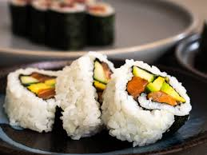
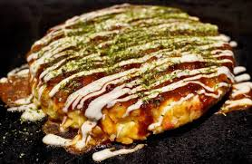
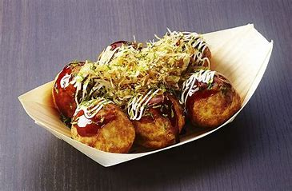

Japanese cuisine is famous for its fresh ingredients, delicate flavors, and artful presentation. Explore popular dishes like Sushi, Ramen, Tempura, and more!

Sushi
Fresh fish and rice rolls, often wrapped in seaweed.
See Recipe
Ramen
Noodle soup with rich broth and toppings.
See Recipe
Tempura
Crispy fried seafood and vegetables.
See Recipe

Okonomiyaki
Savory Japanese pancake with cabbage, meat, and sauce.
See Recipe

Takoyaki
Fried dough balls filled with diced octopus.
See Recipe
Miso Soup
Traditional soup made with miso paste, tofu, and seaweed.
See Recipe